Plots¶
PyMC3 Plotting.
Plots are delegated to the ArviZ library, a general purpose library for “exploratory analysis of Bayesian models.” See https://arviz-devs.github.io/arviz/ for details on plots.
-
pymc3.plots.traceplot(data, var_names=None, coords=None, divergences='bottom', figsize=None, textsize=None, lines=None, combined=False, kde_kwargs=None, hist_kwargs=None, trace_kwargs=None)¶ Plot samples histograms and values.
If divergences data is available in sample_stats, will plot the location of divergences as dashed vertical lines.
Parameters: data : obj
Any object that can be converted to an az.InferenceData object Refer to documentation of az.convert_to_dataset for details
var_names : list of variable names
Variables to be plotted, two variables are required.
coords : mapping, optional
Coordinates of var_names to be plotted. Passed to Dataset.sel
divergences : {“bottom”, “top”, None, False}
Plot location of divergences on the traceplots. Options are “bottom”, “top”, or False-y.
figsize : figure size tuple
If None, size is (12, variables * 2)
textsize: float
Text size scaling factor for labels, titles and lines. If None it will be autoscaled based on figsize.
lines : tuple
Tuple of (var_name, {‘coord’: selection}, [line, positions]) to be overplotted as vertical lines on the density and horizontal lines on the trace.
combined : bool
Flag for combining multiple chains into a single line. If False (default), chains will be plotted separately.
kde_kwargs : dict
Extra keyword arguments passed to arviz.plot_kde. Only affects continuous variables.
hist_kwargs : dict
Extra keyword arguments passed to plt.hist. Only affects discrete variables.
trace_kwargs : dict
Extra keyword arguments passed to plt.plot
Returns
——-
axes : matplotlib axes
Examples
Plot a subset variables
(Source code, png, hires.png, pdf)
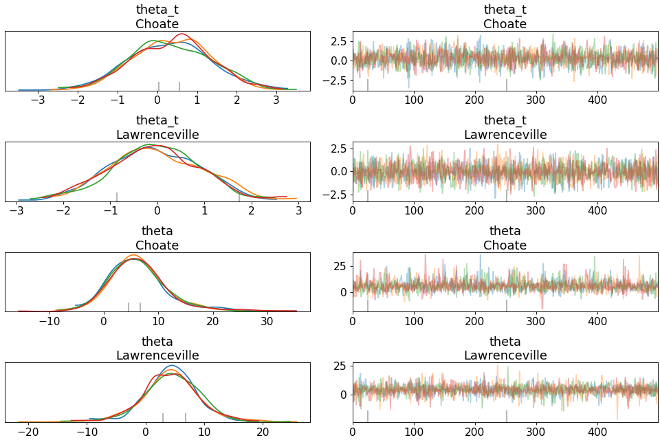Combine all chains into one distribution and trace
(Source code, png, hires.png, pdf)

Plot reference lines against distribution and trace
(Source code, png, hires.png, pdf)
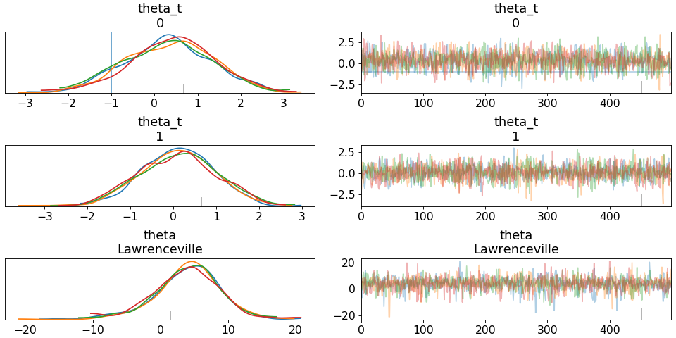
{kind=link}
{kind=link}
{kind=link}
{kind=link}
{kind=link}
{kind=link}
-
pymc3.plots.plot_posterior(data, var_names=None, coords=None, figsize=None, textsize=None, credible_interval=0.94, round_to=1, point_estimate='mean', rope=None, ref_val=None, kind='kde', bw=4.5, bins=None, ax=None, **kwargs)¶ Plot Posterior densities in the style of John K. Kruschke’s book.
Parameters: data : obj
Any object that can be converted to an az.InferenceData object Refer to documentation of az.convert_to_dataset for details
var_names : list of variable names
Variables to be plotted, two variables are required.
coords : mapping, optional
Coordinates of var_names to be plotted. Passed to Dataset.sel
figsize : tuple
Figure size. If None it will be defined automatically.
textsize: float
Text size scaling factor for labels, titles and lines. If None it will be autoscaled based on figsize.
credible_interval : float, optional
Credible intervals. Defaults to 0.94.
round_to : int
Controls formatting for floating point numbers
point_estimate: str
Must be in (‘mode’, ‘mean’, ‘median’)
rope: tuple or dictionary of tuples
Lower and upper values of the Region Of Practical Equivalence. If a list is provided, its length should match the number of variables.
ref_val: float or dictionary of floats
display the percentage below and above the values in ref_val. If a list is provided, its length should match the number of variables.
kind: str
Type of plot to display (kde or hist) For discrete variables this argument is ignored and a histogram is always used.
bw : float
Bandwidth scaling factor for the KDE. Should be larger than 0. The higher this number the smoother the KDE will be. Defaults to 4.5 which is essentially the same as the Scott’s rule of thumb (the default rule used by SciPy). Only works if kind == kde.
bins : integer or sequence or ‘auto’, optional
Controls the number of bins, accepts the same keywords matplotlib.hist() does. Only works if kind == hist. If None (default) it will use auto for continuous variables and range(xmin, xmax + 1) for discrete variables.
ax : axes
Matplotlib axes. Defaults to None.
**kwargs
Passed as-is to plt.hist() or plt.plot() function depending on the value of kind.
Returns: ax : matplotlib axes
Examples
Show a default kernel density plot following style of John Kruschke
(Source code, png, hires.png, pdf)

Plot subset variables by specifying variable name exactly
(Source code, png, hires.png, pdf)
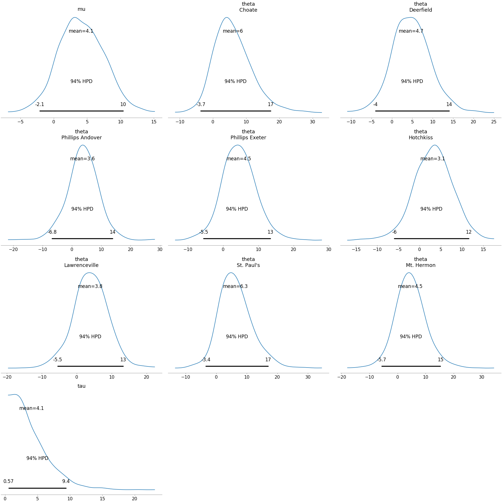Plot Region of Practical Equivalence (rope) for all distributions
(Source code, png, hires.png, pdf)
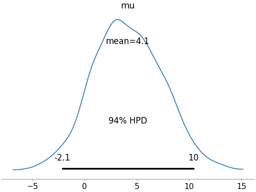Plot Region of Practical Equivalence for selected distributions
(Source code, png, hires.png, pdf)
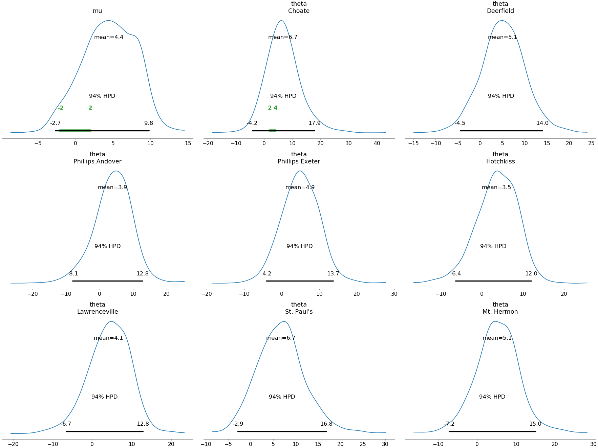Add reference lines
(Source code, png, hires.png, pdf)

Show point estimate of distribution
(Source code, png, hires.png, pdf)
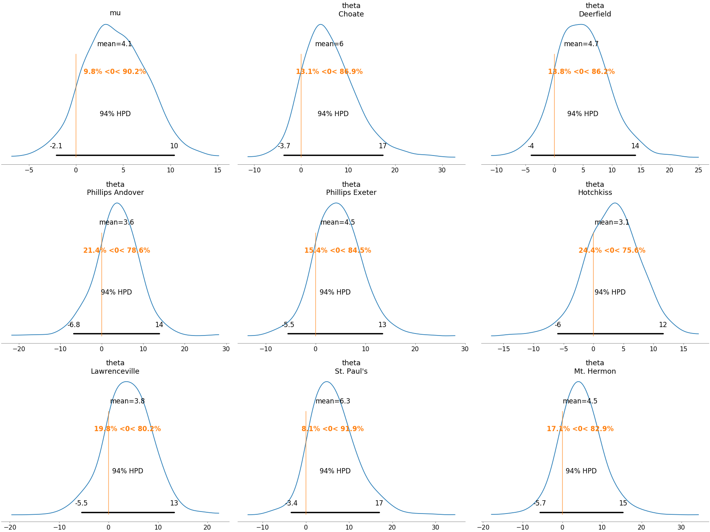Plot posterior as a histogram
(Source code, png, hires.png, pdf)

Change size of credible interval
(Source code, png, hires.png, pdf)
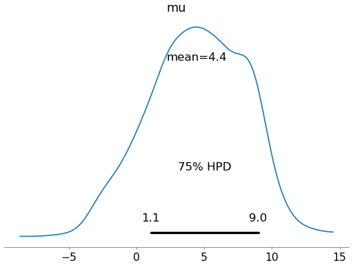
{kind=link}
{kind=link}
{kind=link}
{kind=link}
{kind=link}
{kind=link}
{kind=link}
{kind=link}
{kind=link}
{kind=link}
{kind=link}
{kind=link}
{kind=link}
{kind=link}
{kind=link}
{kind=link}
-
pymc3.plots.forestplot(data, kind='forestplot', model_names=None, var_names=None, combined=False, credible_interval=0.94, rope=None, quartiles=True, ess=False, r_hat=False, colors='cycle', textsize=None, linewidth=None, markersize=None, ridgeplot_alpha=None, ridgeplot_overlap=2, figsize=None)¶ Forest plot to compare credible intervals from a number of distributions.
Generates a forest plot of 100*(credible_interval)% credible intervals from a trace or list of traces.
Parameters: data : obj or list[obj]
Any object that can be converted to an az.InferenceData object Refer to documentation of az.convert_to_dataset for details
kind : str
Choose kind of plot for main axis. Supports “forestplot” or “ridgeplot”
model_names : list[str], optional
List with names for the models in the list of data. Useful when plotting more that one dataset
var_names: list[str], optional
List of variables to plot (defaults to None, which results in all variables plotted)
combined : bool
Flag for combining multiple chains into a single chain. If False (default), chains will be plotted separately.
credible_interval : float, optional
Credible interval to plot. Defaults to 0.94.
rope: tuple or dictionary of tuples
Lower and upper values of the Region Of Practical Equivalence. If a list with one interval only is provided, the ROPE will be displayed across the y-axis. If more than one interval is provided the length of the list should match the number of variables.
quartiles : bool, optional
Flag for plotting the interquartile range, in addition to the credible_interval intervals. Defaults to True
r_hat : bool, optional
Flag for plotting Split R-hat statistics. Requires 2 or more chains. Defaults to False
ess : bool, optional
Flag for plotting the effective sample size. Requires 2 or more chains. Defaults to False
colors : list or string, optional
list with valid matplotlib colors, one color per model. Alternative a string can be passed. If the string is cycle, it will automatically chose a color per model from the matplotlibs cycle. If a single color is passed, eg ‘k’, ‘C2’, ‘red’ this color will be used for all models. Defauls to ‘cycle’.
textsize: float
Text size scaling factor for labels, titles and lines. If None it will be autoscaled based on figsize.
linewidth : int
Line width throughout. If None it will be autoscaled based on figsize.
markersize : int
Markersize throughout. If None it will be autoscaled based on figsize.
ridgeplot_alpha : float
Transparency for ridgeplot fill. If 0, border is colored by model, otherwise a black outline is used.
ridgeplot_overlap : float
Overlap height for ridgeplots.
figsize : tuple
Figure size. If None it will be defined automatically.
Returns: gridspec : matplotlib GridSpec
-
pymc3.plots.compareplot(comp_df, insample_dev=True, plot_standard_error=True, plot_ic_diff=True, figsize=None, textsize=None, plot_kwargs=None, ax=None)¶ Summary plot for model comparison.
This plot is in the style of the one used in the book Statistical Rethinking (Chapter 6) by Richard McElreath.
Parameters: comp_df: pd.DataFrame
Result of the az.compare() method
insample_dev : bool, optional
Plot in-sample deviance, that is the value of the information criteria without the penalization given by the effective number of parameters (pIC). Defaults to True
plot_standard_error : bool, optional
Plot the standard error of the information criteria estimate. Defaults to True
plot_ic_diff : bool, optional
- Plot standard error of the difference in information criteria between each model
and the top-ranked model. Defaults to True
figsize : tuple, optional
If None, size is (6, num of models) inches
textsize: float
Text size scaling factor for labels, titles and lines. If None it will be autoscaled based on figsize.
plot_kwargs : dict, optional
Optional arguments for plot elements. Currently accepts ‘color_ic’, ‘marker_ic’, ‘color_insample_dev’, ‘marker_insample_dev’, ‘color_dse’, ‘marker_dse’, ‘ls_min_ic’ ‘color_ls_min_ic’, ‘fontsize’
ax : axes, optional
Matplotlib axes
Returns: ax : matplotlib axes
Notes
Defaults to comparing Widely Accepted Information Criterion (WAIC) if present in comp_df column, otherwise compares Leave-one-out (loo)
Examples
Show default compare plot
(Source code, png, hires.png, pdf)

Plot standard error and information criteria difference only
(Source code, png, hires.png, pdf)

{kind=link}
{kind=link}
{kind=link}
{kind=link}
-
pymc3.plots.autocorrplot(data, var_names=None, max_lag=100, combined=False, figsize=None, textsize=None)¶ Bar plot of the autocorrelation function for a sequence of data.
Useful in particular for posteriors from MCMC samples which may display correlation.
Parameters: data : obj
Any object that can be converted to an az.InferenceData object Refer to documentation of az.convert_to_dataset for details
var_names : list of variable names, optional
Variables to be plotted, if None all variable are plotted. Vector-value stochastics are handled automatically.
max_lag : int, optional
Maximum lag to calculate autocorrelation. Defaults to 100.
combined : bool
Flag for combining multiple chains into a single chain. If False (default), chains will be plotted separately.
figsize : tuple
Figure size. If None it will be defined automatically. Note this is not used if ax is supplied.
textsize: float
Text size scaling factor for labels, titles and lines. If None it will be autoscaled based on figsize.
Returns: axes : matplotlib axes
Examples
Plot default autocorrelation
(Source code, png, hires.png, pdf)
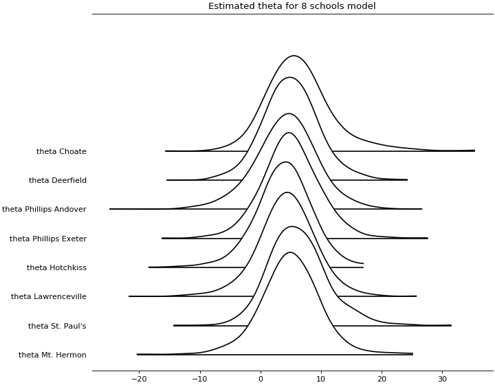Plot subset variables by specifying variable name exactly
(Source code, png, hires.png, pdf)
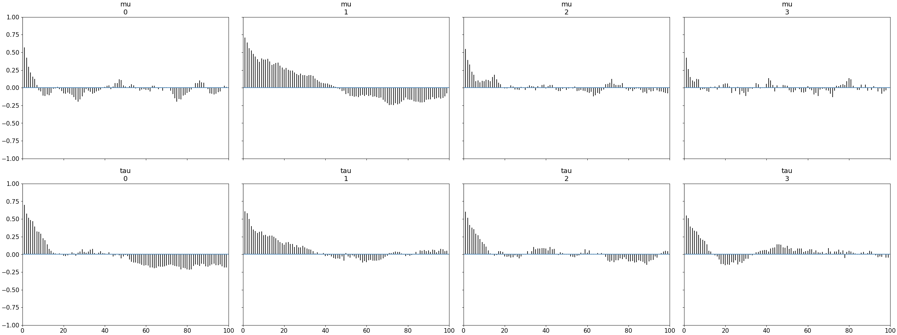Combine chains collapsing by variable
(Source code, png, hires.png, pdf)

Specify maximum lag (x axis bound)
(Source code, png, hires.png, pdf)
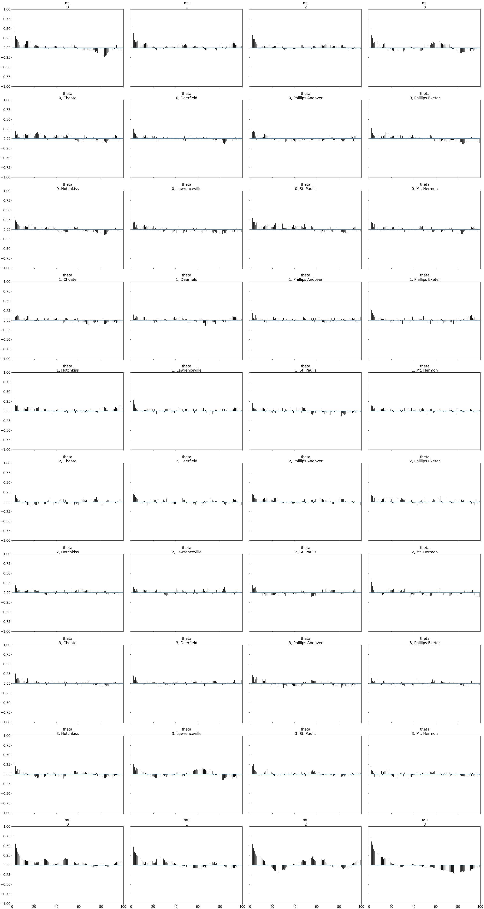
{kind=link}
{kind=link}
{kind=link}
{kind=link}
{kind=link}
{kind=link}
{kind=link}
{kind=link}
-
pymc3.plots.energyplot(data, kind='kde', bfmi=True, figsize=None, legend=True, fill_alpha=(1, 0.75), fill_color=('C0', 'C5'), bw=4.5, textsize=None, fill_kwargs=None, plot_kwargs=None, ax=None)¶ Plot energy transition distribution and marginal energy distribution in HMC algorithms.
This may help to diagnose poor exploration by gradient-based algorithms like HMC or NUTS.
Parameters: data : xarray dataset, or object that can be converted (must represent
sample_stats and have an energy variable)
kind : str
Type of plot to display (kde or histogram)
bfmi : bool
If True add to the plot the value of the estimated Bayesian fraction of missing information
figsize : tuple
Figure size. If None it will be defined automatically.
legend : bool
Flag for plotting legend (defaults to True)
fill_alpha : tuple of floats
Alpha blending value for the shaded area under the curve, between 0 (no shade) and 1 (opaque). Defaults to (1, .75)
fill_color : tuple of valid matplotlib color
Color for Marginal energy distribution and Energy transition distribution. Defaults to (‘C0’, ‘C5’)
bw : float
Bandwidth scaling factor for the KDE. Should be larger than 0. The higher this number the smoother the KDE will be. Defaults to 4.5 which is essentially the same as the Scott’s rule of thumb (the default rule used by SciPy). Only works if kind=’kde’
textsize: float
Text size scaling factor for labels, titles and lines. If None it will be autoscaled based on figsize.
fill_kwargs : dicts, optional
Additional keywords passed to arviz.plot_kde (to control the shade)
plot_kwargs : dicts, optional
Additional keywords passed to arviz.plot_kde or plt.hist (if type=’hist’)
ax : axes
Matplotlib axes.
Returns: ax : matplotlib axes
-
pymc3.plots.kdeplot(values, values2=None, cumulative=False, rug=False, label=None, bw=4.5, quantiles=None, rotated=False, contour=True, fill_last=True, textsize=None, plot_kwargs=None, fill_kwargs=None, rug_kwargs=None, contour_kwargs=None, ax=None, legend=True)¶ 1D or 2D KDE plot taking into account boundary conditions.
Parameters: values : array-like
Values to plot
values2 : array-like, optional
Values to plot. If present, a 2D KDE will be estimated
cumulative : bool
If true plot the estimated cumulative distribution function. Defaults to False. Ignored for 2D KDE
rug : bool
If True adds a rugplot. Defaults to False. Ignored for 2D KDE
label : string
Text to include as part of the legend
bw : float
Bandwidth scaling factor for 1D KDE. Should be larger than 0. The higher this number the smoother the KDE will be. Defaults to 4.5 which is essentially the same as the Scott’s rule of thumb (the default rule used by SciPy).
quantiles : list
Quantiles in ascending order used to segment the KDE. Use [.25, .5, .75] for quartiles. Defaults to None.
rotated : bool
Whether to rotate the 1D KDE plot 90 degrees.
contour : bool
If True plot the 2D KDE using contours, otherwise plot a smooth 2D KDE. Defaults to True.
fill_last : bool
If True fill the last contour of the 2D KDE plot. Defaults to True.
textsize: float
Text size scaling factor for labels, titles and lines. If None it will be autoscaled based on figsize.
plot_kwargs : dict
Keywords passed to the pdf line of a 1D KDE.
fill_kwargs : dict
Keywords passed to the fill under the line (use fill_kwargs={‘alpha’: 0} to disable fill). Ignored for 2D KDE
rug_kwargs : dict
Keywords passed to the rug plot. Ignored if rug=False or for 2D KDE Use space keyword (float) to control the position of the rugplot. The larger this number the lower the rugplot.
contour_kwargs : dict
Keywords passed to the contourplot. Ignored for 1D KDE.
ax : matplotlib axes
legend : bool
Add legend to the figure. By default True.
Returns: ax : matplotlib axes
Examples
Plot default KDE
(Source code, png, hires.png, pdf)
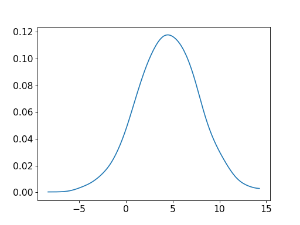Plot KDE with rugplot
(Source code, png, hires.png, pdf)
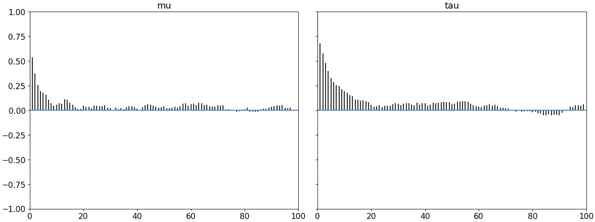Plot a cumulative distribution
(Source code, png, hires.png, pdf)
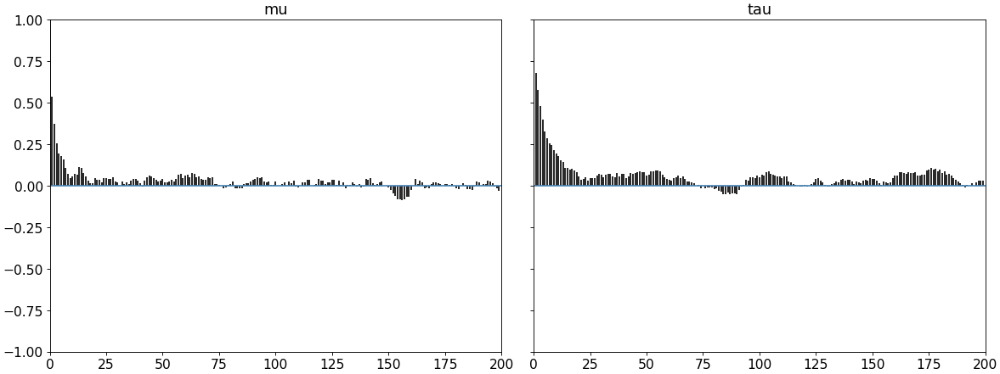Rotate plot 90 degrees
(Source code, png, hires.png, pdf)
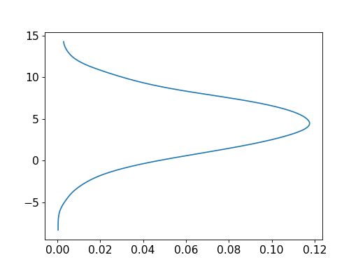Plot 2d contour KDE
(Source code, png, hires.png, pdf)
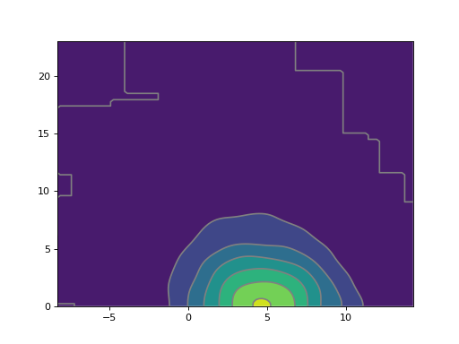Remove fill for last contour in 2d KDE
(Source code, png, hires.png, pdf)
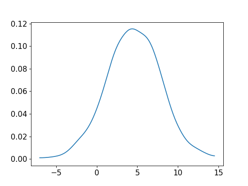Plot 2d smooth KDE
(Source code, png, hires.png, pdf)
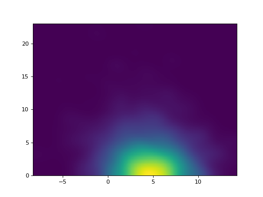
{kind=link}
{kind=link}
{kind=link}
{kind=link}
{kind=link}
{kind=link}
{kind=link}
{kind=link}
{kind=link}
{kind=link}
{kind=link}
{kind=link}
{kind=link}
{kind=link}
-
pymc3.plots.densityplot(data, group='posterior', data_labels=None, var_names=None, credible_interval=0.94, point_estimate='mean', colors='cycle', outline=True, hpd_markers='', shade=0.0, bw=4.5, figsize=None, textsize=None)¶ Generate KDE plots for continuous variables and histograms for discrete ones.
Plots are truncated at their 100*(1-alpha)% credible intervals. Plots are grouped per variable and colors assigned to models.
Parameters: data : Union[Object, Iterator[Object]]
Any object that can be converted to an az.InferenceData object, or an Iterator returning a sequence of such objects. Refer to documentation of az.convert_to_dataset for details about such objects.
group: Optional[str]
Specifies which InferenceData group should be plotted. Defaults to ‘posterior’. Alternative values include ‘prior’ and any other strings used as dataset keys in the InferenceData.
data_labels : Optional[List[str]]
List with names for the datasets passed as “data.” Useful when plotting more than one dataset. Must be the same shape as the data parameter. Defaults to None.
var_names: Optional[List[str]]
List of variables to plot. If multiple datasets are supplied and var_names is not None, will print the same set of variables for each dataset. Defaults to None, which results in all the variables being plotted.
credible_interval : float
Credible intervals. Should be in the interval (0, 1]. Defaults to 0.94.
point_estimate : Optional[str]
Plot point estimate per variable. Values should be ‘mean’, ‘median’ or None. Defaults to ‘mean’.
colors : Optional[Union[List[str],str]]
List with valid matplotlib colors, one color per model. Alternative a string can be passed. If the string is cycle, it will automatically choose a color per model from matplolib’s cycle. If a single color is passed, e.g. ‘k’, ‘C2’ or ‘red’ this color will be used for all models. Defaults to cycle.
outline : bool
Use a line to draw KDEs and histograms. Default to True
hpd_markers : str
A valid matplotlib.markers like ‘v’, used to indicate the limits of the hpd interval. Defaults to empty string (no marker).
shade : Optional[float]
Alpha blending value for the shaded area under the curve, between 0 (no shade) and 1 (opaque). Defaults to 0.
bw : Optional[float]
Bandwidth scaling factor for the KDE. Should be larger than 0. The higher this number the smoother the KDE will be. Defaults to 4.5 which is essentially the same as the Scott’s rule of thumb (the default rule used by SciPy).
figsize : Optional[Tuple[int, int]]
Figure size. If None it will be defined automatically.
textsize: Optional[float]
Text size scaling factor for labels, titles and lines. If None it will be autoscaled based on figsize.
Returns: ax : Matplotlib axes
Examples
Plot default density plot
(Source code, png, hires.png, pdf)

Plot subset variables by specifying variable name exactly
(Source code, png, hires.png, pdf)

Plot a specific az.InferenceData group
(Source code, png, hires.png, pdf)
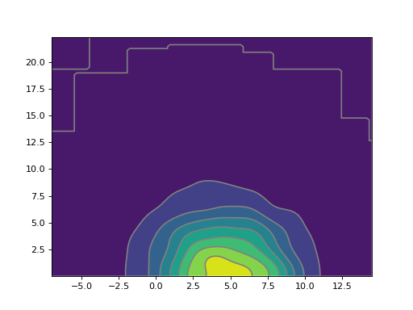Specify credible interval
(Source code, png, hires.png, pdf)
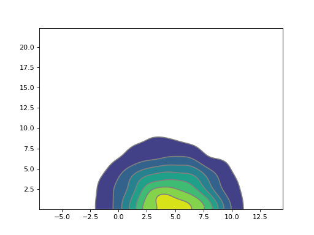Shade plots and/or remove outlines
(Source code, png, hires.png, pdf)
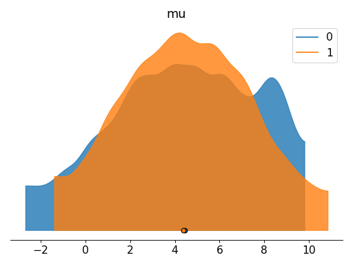Specify binwidth for kernel density estimation
(Source code, png, hires.png, pdf)

{kind=link}
{kind=link}
{kind=link}
{kind=link}
{kind=link}
{kind=link}
{kind=link}
{kind=link}
{kind=link}
{kind=link}
{kind=link}
{kind=link}
-
pymc3.plots.pairplot(data, var_names=None, coords=None, figsize=None, textsize=None, kind='scatter', gridsize='auto', contour=True, fill_last=True, divergences=False, colorbar=False, ax=None, divergences_kwargs=None, plot_kwargs=None)¶ Plot a scatter or hexbin matrix of the sampled parameters.
Parameters: data : obj
Any object that can be converted to an az.InferenceData object Refer to documentation of az.convert_to_dataset for details
var_names : list of variable names
Variables to be plotted, if None all variable are plotted
coords : mapping, optional
Coordinates of var_names to be plotted. Passed to Dataset.sel
figsize : figure size tuple
If None, size is (8 + numvars, 8 + numvars)
textsize: int
Text size for labels. If None it will be autoscaled based on figsize.
kind : str
Type of plot to display (kde or hexbin)
gridsize : int or (int, int), optional
Only works for kind=hexbin. The number of hexagons in the x-direction. The corresponding number of hexagons in the y-direction is chosen such that the hexagons are approximately regular. Alternatively, gridsize can be a tuple with two elements specifying the number of hexagons in the x-direction and the y-direction.
contour : bool
If True plot the 2D KDE using contours, otherwise plot a smooth 2D KDE. Defaults to True.
fill_last : bool
If True fill the last contour of the 2D KDE plot. Defaults to True.
divergences : Boolean
If True divergences will be plotted in a different color
colorbar : bool
If True a colorbar will be included as part of the plot (Defaults to False). Only works when kind=hexbin
ax: axes
Matplotlib axes
divergences_kwargs : dicts, optional
Additional keywords passed to ax.scatter for divergences
plot_kwargs : dicts, optional
Additional keywords passed to ax.plot, az.plot_kde or ax.hexbin
Returns
——-
ax : matplotlib axes